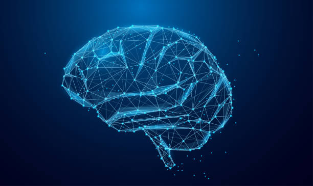
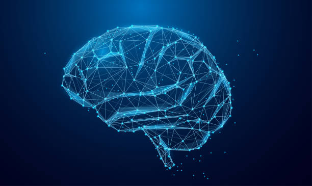
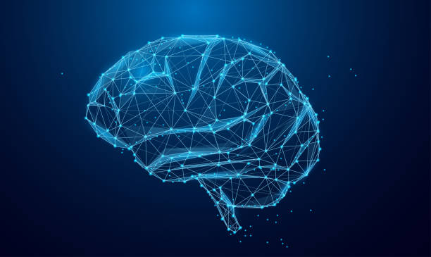

Discover the complexities of the human brain and its role in behavior,cognition, and health.
Home Page: Introduction to Robotics and Its Applications Explore the latest advancements in robotics and how they are shaping industries and society. Robotics is an interdisciplinary field that often programmed to perform specific tasks, such as assembling merges engineering, computer science, and technology to create machines capable of performing various tasks autonomously or semi-autonomously. These robots are products on a factory line, assisting in surgeries, or even exploring distant planets. Robotics has opened new possibilities for healthcare, exploration, and personal use, leading to innovation in sectors that previously relied heavily on manual labor. industries. In recent years, advancements in artificial intelligence, machine leaming, and sensor technologies have greatly enhanced the capabilities tons, but autonomous systems capable of learning, adapting, and interacting with their environment. From robotic arms and has become a critical part of modern society of robots. They are no longer just machines following preset in manufacturing to drones in agriculture, the world of robotics is rapidly evolving Robots in different sectors

Neuropiasticity refers to the brain's ability to adapt and reorganize itself in response to experiences, learning, and injury. This remarkable property allows the brain to form new neural connections throughout life, enabling recovery from trauma and adaptation to new environments
Mustralion of neuroplastioily in the brain


Mental health is a crucial aspect of overall well-being, affecting how we think, feel, and act. It also plays a significant role in how we handle stress, relate to others, and make choices. Mental health conditions, such as depression and anxiety, can impact anyone, regardless of age or background
Maintaining good mental health is essential for a fulfilling life. Here are some key points about mental health:


Importance of mental heath in our lives.
| Function | Description | Importance |
|---|---|---|
| Cognition | The mental action of acquiring knowledge and understanding. | Critical for decision-making and problem-solving. |
| Emotion Regulation | The ability to manage and respond to emotional experiences. | Essential for mental health and social interactions. |
| Memory | The process of encoding, storing and retrieving information. | Vital for learning and adapting to new situations. |
| Motor Control | The coordination of muscle movements. | Necessary for physical activity and coordination. |
The human brain is a remarkable organ with incredible capabilities. Understanding its functions and the importance of mental health is crucial for personal well-being and societal progress. As we continue to explore the complexities of the brain, we can unlock new potential for treatment and enhance our quality of life
Brain Conclution
A summary of brain functions and their importance
© 2024 The Human Brain
For more viformation on neuroscience, visit BrainFacts.org